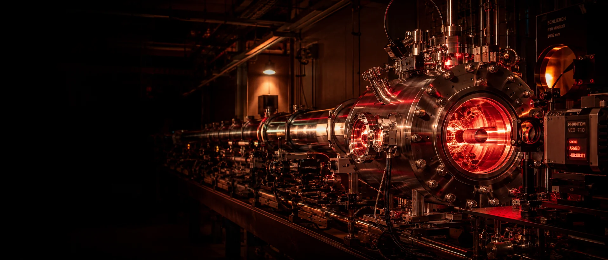

EST. 1998
Center for
Engineering
Concepts
Development (CECD)
A national resource for Energetic Materials Science and Manufacturing, based at the A. James Clark School of Engineering at the University of Maryland College Park.

Recent News
All News-
Event May 2026
Maryland Energetics Innovation Hub breaks ground at Indian Head.
CECD joined federal, state, and industry partners as ACMI and NSWC Indian Head Division broke ground on the $250 million hub, where the Center will help grow the next generation of energetics professionals.
-
Publication 2023
Machine learning recovers shock compression of solids from scarce data.
Balakrishnan, VanGessel, Barnes, and Chung publish interpretable machine learning for the shock compression of solids in the Journal of Applied Physics.
-
Publication 2022
Selective phonon stimulation offers a route to tune thermal transport.
Kumar and Chung describe a selective phonon stimulation mechanism for tuning thermal transport, published in ACS Omega.
-
Result 2019
Deep learning review maps the state of molecular design.
Elton, Boukouvalas, Fuge, and Chung survey deep learning for molecular design in Molecular Systems Design & Engineering.
-
Result 2018
Machine learning predicts the properties of energetic materials.
Elton, Boukouvalas, Butrico, Fuge, and Chung apply machine learning to predict energetic-materials properties in Scientific Reports.